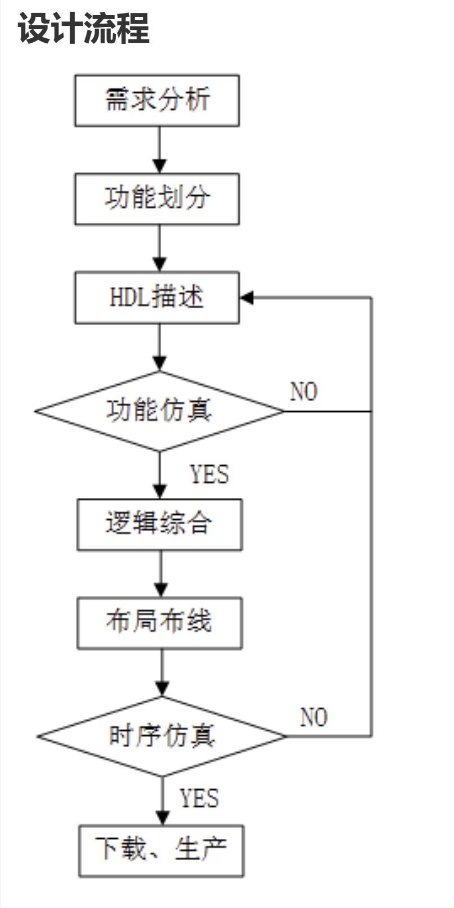

Index
Verilog基础语法#
引言
本笔记参考Runoob的教程以及其他资料参考学习记录，为硬件课程学习的基础语言。
Verilog中的一些特性#
- 一般来说，当位宽不匹配时，向左补0扩展.
初窥#
Verilog是一种硬件编程语言，可以拓写到FPGA上去运行。
基本特性：Verilog区分大小写，语句以分号为结束，空白符无意义，注释方法同C。
设计流程#
一般的设计思路如下图：

标识符#
标识符（identifier）可以是任意一组字母、数字、$ 符号和 _(下划线)符号的合，但标识符的第一个字符必须是字母或者下划线，不能以数字或者美元符开始。一般更偏向于下划线命名法。
数值#
数值种类#
Verilog HDL 有下列四种基本的值来表示硬件电路中的电平逻辑：
- 0：逻辑 0 或 "假"
- 1：逻辑 1 或 "真"
- x 或 X：未知
- z 或 Z：高阻
x 意味着信号数值的不确定，即在实际电路里，信号可能为 1，也可能为 0。
z 意味着信号处于高阻状态，常见于信号（input, reg）没有驱动时的逻辑结果。例如一个 pad 的 input 呈现高阻状态时，其逻辑值和上下拉的状态有关系。上拉则逻辑值为 1，下拉则为 0 。
数值表示#
指明位宽：
不指明位宽:
一般直接写数字时，默认为十进制表示，例如下面的 3 种写法是等效的：
数据类型#
Verilog 最常用的 2 种数据类型就是线网（wire）与寄存器（reg），其余类型可以理解为这两种数据类型的扩展或辅助。
线网（wire）#
wire 类型表示硬件单元之间的物理连线，由其连接的器件输出端连续驱动。如果没有驱动元件连接到 wire 型变量，缺省值一般为 "Z"。举例如下：
线网型还有其他数据类型，包括 wand，wor，wri，triand，trior，trireg 等。这些数据类型用的频率不是很高，这里不做介绍。
寄存器（reg）#
寄存器（reg）用来表示存储单元，它会保持数据原有的值，直到被改写。声明举例如下：
例如在 always 块中，寄存器可能被综合成边沿触发器，在组合逻辑中可能被综合成 wire 型变量。寄存器不需要驱动源，也不一定需要时钟信号。在仿真时，寄存器的值可在任意时刻通过赋值操作进行改写。例如：
向量化多位宽：
[a:b]：a是指最高位索引，b是指最低位索引。
reg [3:0] counter ; //声明4bit位宽的寄存器counter
wire [32-1:0] gpio_data; //声明32bit位宽的线型变量gpio_data
wire [8:2] addr ; //声明7bit位宽的线型变量addr，位宽范围为8:2
reg [0:31] data ; //声明32bit位宽的寄存器变量data, 最高有效位为0
以及二维向量寄存器：
Verilog支持bit位后固定位宽的向量域选择访问：
//下面 2 种赋值是等效的
A = data1[31-: 8] ;
A = data1[31:24] ;
//下面 2 种赋值是等效的
B = data1[0+ : 8] ;
B = data1[0:7] ;
整数、实数、时间寄存器#
interger表示整数申明；real申明实数；time申明时间，可通过time current_time;#100; current_time=$time获得当前系统时间，此代码中为100个时间单位。
字符串#
字符串中不能包含回车符,同样如c语言中的‘\n’。如果寄存器变量的宽度大于字符串的大小，则使用 0 来填充左边的空余位；如果寄存器变量的宽度小于字符串大小，则会截去字符串左边多余的数据通常字符串一个字符为8bits。
reg [0:14*8-1] str; str="run.runoob.com"
Verilog同样使用\来转义字符表示输出。
表达式#
表达式由操作符和操作数组成。
操作数#
操作数可以是任意数据类型，只有某些特定语法结构使用特定类型的操作数。
module test;
//实数
real a, b, c;
c = a + b ;
//寄存器
reg [3:0] cprmu_1, cprmu_2 ;
begin
cprmu_2 = cprmu_1 ^ cprmu_2 ;
end
//函数
reg flag1 ;
flag = calculate_result(A, B);
//非法操作数
reg [3:0] res;
wire [3:0] temp;
always@ （*）begin
res = cprmu_2 – cprmu_1 ;
//temp = cprmu_2 – cprmu_1 ; //不合法，always块里赋值对象不能是wire型
end
endmodule
操作符#
Verilog 中提供了大约 9 种操作符，分别是算术、关系、等价、逻辑、按位、归约、移位、拼接、条件操作符。
大部分操作符与 C 语言中类似。同类型操作符之间，除条件操作符从右往左关联，其余操作符都是自左向右关联。圆括号内表达式优先执行。例如下面每组的 2 种写法都是等价的:
//自右向左关联，两种写法等价
A+B-C ;
(A+B）-C ;
//自右向左关联，两种写法等价，结果为 B、D 或 F
A ? B : C ? D : F ;
A ? B : (C ? D : F) ;
//自右向左关联，两种写法不等价
(A ? B : C) ? D : F ; //结果 D 或 F
A ? B : C ? D : F ; //结果为 B、D 或 F
| 操作符 | 操作符号 | 优先级 |
|---|---|---|
| 单目运算 | + - ! ~ | 最高 |
| 乘、除、取模 | * / % | |
| 加减 | + - | |
| 移位 | << >> | |
| 关系 | < <= > >= | |
| 等价 | == != \(===\) \(!===\)全等操作？ | |
| 归约 | & ~& | |
| ^ ~^ | ||
| | ~| | ||
| 逻辑 | && | |
| || | ||
| 条件 | ?: | 最低 |
关系操作符#
关系操作符有大于（>），小于（<），大于等于（>=），小于等于（<=）。
关系操作符的正常结果有 2 种，真（1）或假（0）。
算术操作符#
算术操作符包括单目操作符和双目操作符。
双目操作符对 2 个操作数进行算术运算，包括乘（）、除（/）、加（+）、减（-）、求幂（*）、取模（%）
reg [3:0] a, b;
reg [4:0] c ;
a = 4'b0010 ;
b = 4'b1001 ;
c = a+b; //结果为c=b'b1011
c = a/b; //结果为c=4，取整
b = 4'b100x ;
c = a+b ; //结果为c=4'bxxxx
数据如果溢出会被高位截断。
等价操作符#
等价操作符包括逻辑相等==，逻辑不等!=，全等===，非全等!==。
等价操作符的正常结果有 2 种：为真（1）或假（0）。
逻辑相等/不等操作符不能比较 x 或 z，当操作数包含一个 x 或 z，则结果为不确定值。
逻辑操作符#
逻辑操作符主要有 3 个：&&（逻辑与）, ||（逻辑或），!（逻辑非）。
逻辑操作符的计算结果是一个 1bit 的值，0 表示假，1 表示真，x 表示不确定。
按位操作符#
按位操作符包括：取反（ ~ ），与（ & ），或（ | ），异或（^），同或（~^）。
按位操作符对 2 个操作数的每 1bit 数据进行按位操作。
如果 2 个操作数位宽不相等，则用 0 向左扩展补充较短的操作数。
取反操作符只有一个操作数，它对操作数的每 1bit 数据进行取反操作。
下图给出了按位操作符的逻辑规则。
| &(与） | 0 | 1 | x | |(或) | 0 | 1 | x | |
|---|---|---|---|---|---|---|---|---|
| 0 | 0 | 0 | 0 | 0 | 0 | 1 | x | |
| 1 | 0 | 1 | x | 1 | 1 | 1 | 1 | |
| x | 0 | x | x | x | x | 1 | x |
| ^(异或) | 0 | 1 | x | ~^(同或) | 0 | 1 | x | |
|---|---|---|---|---|---|---|---|---|
| 0 | 0 | 1 | x | 0 | 1 | 0 | x | |
| 1 | 1 | 0 | x | 1 | 0 | 1 | x | |
| x | x | x | x | x | x | x | x |
归约操作符#
归约操作符包括：归约与（&），归约与非（&），归约或（|），归约或非（|），归约异或（^），归约同或（~^）。
归约操作符只有一个操作数，它对这个向量操作数逐位进行操作，最终产生一个 1bit 结果。
逻辑操作符、按位操作符和归约操作符都使用相同的符号表示，因此有时候容易混淆。区分这些操作符的关键是分清操作数的数目，和计算结果的规则。
A = 4'b1010 ;
&A ; //结果为 1 & 0 & 1 & 0 = 1'b0，可用来判断变量A是否全1
~|A ; //结果为 ~(1 | 0 | 1 | 0) = 1'b0, 可用来判断变量A是否为全0
^A ; //结果为 1 ^ 0 ^ 1 ^ 0 = 1'b0
移位操作符#
移位操作符包括左移（<<），右移（>>），算术左移（<<<），算术右移（>>>）。
移位操作符是双目操作符，两个操作数分别表示要进行移位的向量信号（操作符左侧）与移动的位数（操作符右侧）。
算术左移和逻辑左移时，右边低位会补 0。
逻辑右移时，左边高位会补 0；而算术右移时，左边高位会补充符号位，以保证数据缩小后值的正确性。
A = 4'b1100 ;
B = 4'b0010 ;
A = A >> 2 ; *//结果为 4'b0011*
A = A << 1; *//结果为 4'b1000*
A = A <<< 1 ; *//结果为 4'b1000*
C = B + (A>>>2); *//结果为 2 + (-4/4) = 1, 4'b0001*
拼接操作符#
拼接操作符用大括号 {，} 来表示，用于将多个操作数（向量）拼接成新的操作数（向量），信号间用逗号隔开。
拼接符操作数必须指定位宽，常数的话也需要指定位宽。例如：
A = 4'b1010 ;
B = 1'b1 ;
Y1 = {B, A[3:2], A[0], 4'h3 }; *//结果为Y1='b1100_0011*
Y2 = {4{B}, 3'd4}; *//结果为 Y2=7'b111_1100*
Y3 = {32{1'b0}}; *//结果为 Y3=32h0，常用作寄存器初始化时匹配位宽的赋初值
条件操作符#
条件表达式有 3 个操作符，结构描述如下：
计算时，如果 condition_expression 为真（逻辑值为 1），则运算结果为 true_expression；如果 condition_expression 为假（逻辑值为 0），则计算结果为 false_expression。
assign hsel = (addr[9:8] == 2'b0) ? hsel_p1 : hsel_p2 ;
//当信号 addr 高 2bit 为 0 时，hsel 赋值为 hsel_p1; 否则，将 hsel_p2 赋值给 hsel。
其实，条件表达式类似于 2 路（或多路）选择器，其描述方式完全可以用 if-else 语句代替。
当然条件操作符也能进行嵌套，完成一个多次选择的逻辑。例如：
assign hsel = (addr[9:8] == 2'b00) ? hsel_p1 :
(addr[9:8] == 2'b01) ? hsel_p2 :
(addr[9:8] == 2'b10) ? hsel_p3 :
(addr[9:8] == 2'b11) ? hsel_p4 ;
编译命令#
C语言中的#都被`所替换（define typdef
`timescale：在 Verilog 模型中，时延有具体的单位时间表述，并用 ``timescale编译指令将时间单位与实际时间相关联。该指令用于定义时延、仿真的单位和精度，格式为：
timescale time_unit / time_precision
在编译过程中，
timescale** 指令会影响后面所有模块中的时延值，直至遇到另一个 **timescale 指令或 `resetall 指令。由于在 Verilog 中没有默认的
timescale**，如果没有指定 **timescale，Verilog 模块就有会继承前面编译模块的 `timescale 参数。有可能导致设计出错。
Created: 2023年9月27日 10:52:36